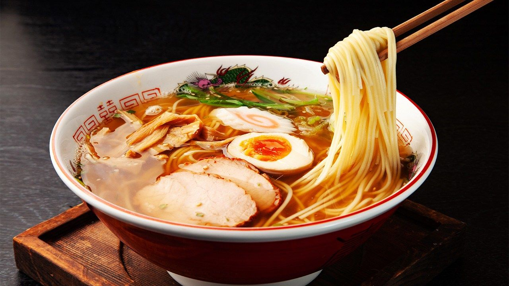
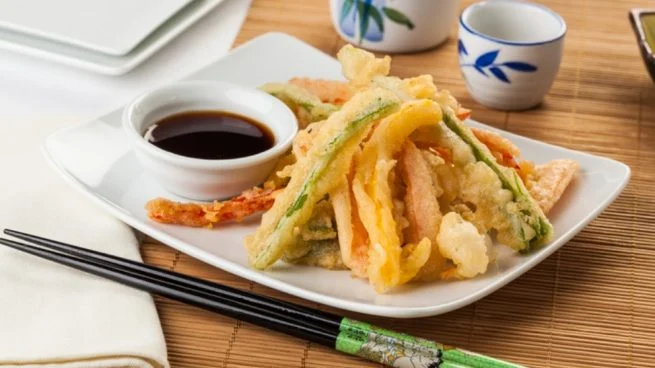
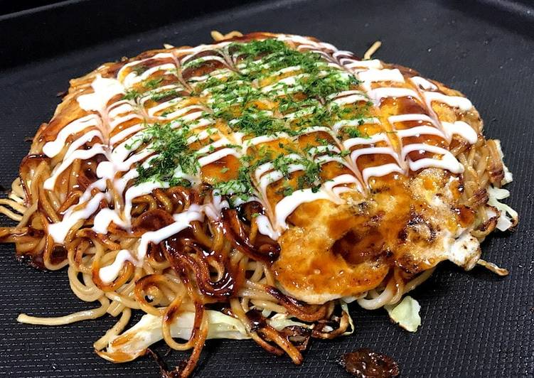
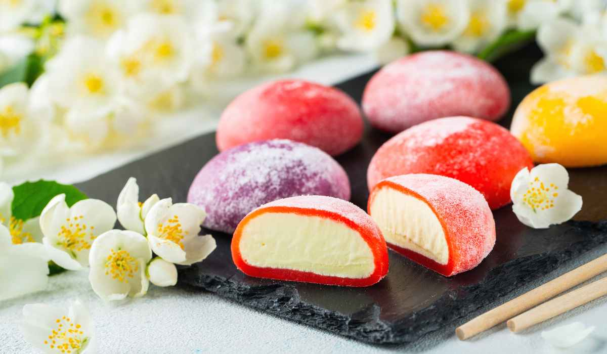
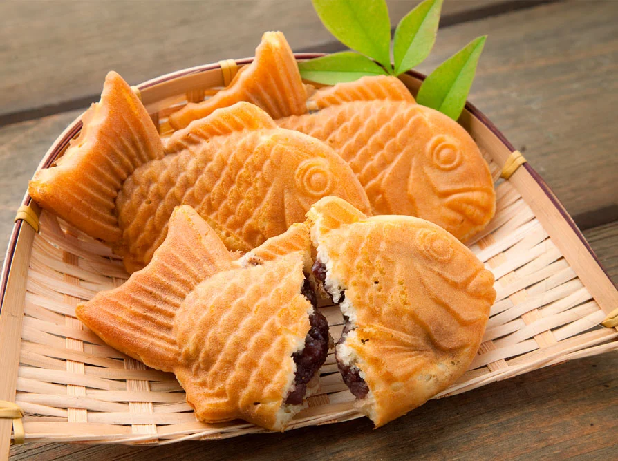
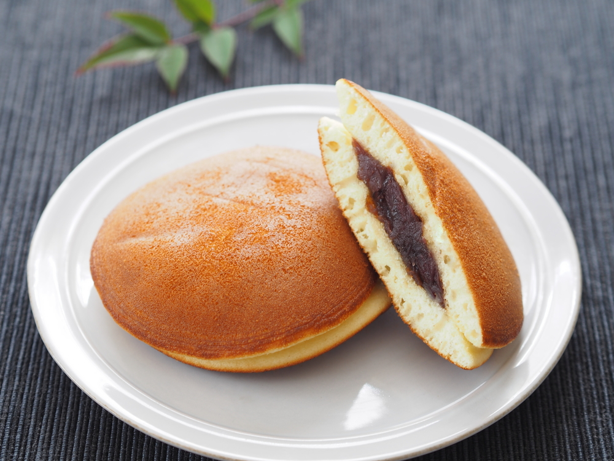
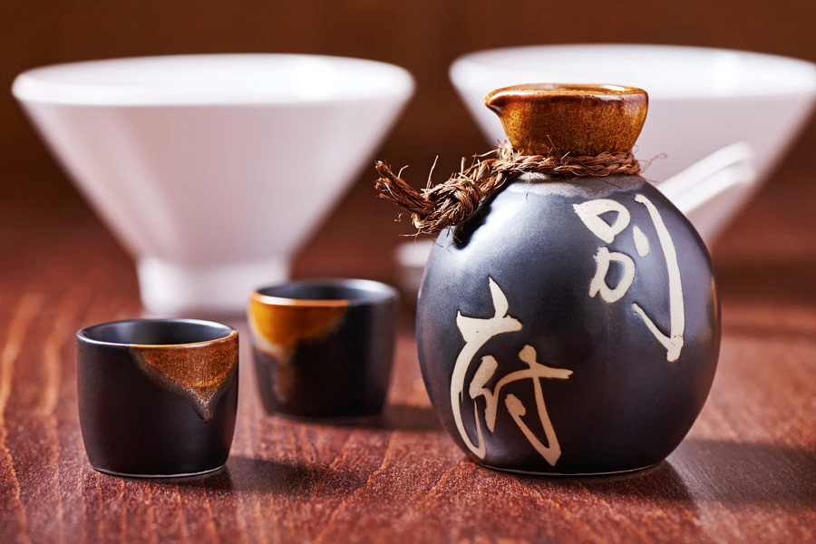
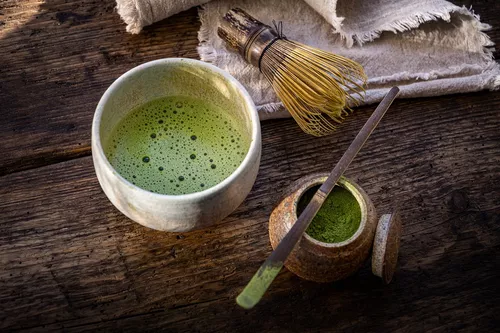
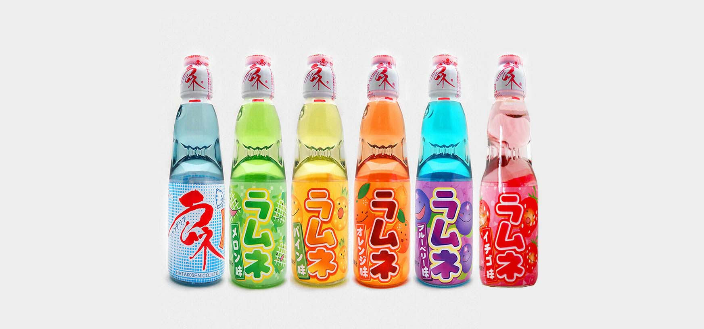

Gastronomía Japonesa
Embárcate en un viaje culinario a través de Japón, donde cada bocado es una explosión de sabores. Desde la delicadeza del sushi fresco hasta la reconfortante calidez del ramen, descubre una gastronomía que deleita los sentidos y captura la esencia de la cultura japonesa.
Platos Salados
Sushi
El sushi, una joya de la gastronomía japonesa, es una experiencia culinaria que trasciende la simple combinación de arroz y pescado. Se trata de un arte delicado, donde el arroz avinagrado, cocido a la perfección, sirve de lienzo para una variedad de ingredientes frescos y vibrantes. Desde el suave y untuoso salmón hasta el atún de rojo intenso, cada pieza de sushi es una explosión de sabores y texturas que se complementan a la perfección
Ramen
Un plato de fideos en caldo, acompañado de carne, huevo y vegetales. Hay variedades como shoyu (salsa de soja), miso y tonkotsu (hueso de cerdo).
Tempura
La tempura es una técnica culinaria japonesa que transforma ingredientes frescos como mariscos y verduras en bocados ligeros y crujientes. Cada pieza se sumerge en una masa ligera y se fríe hasta alcanzar un dorado perfecto, creando una textura delicada que contrasta con la jugosidad del interior. La tempura es un equilibrio entre la simplicidad de los ingredientes y la precisión de la técnica, ofreciendo una experiencia gastronómica que deleita los sentidos
Okonomiyaki
El okonomiyaki, a menudo descrito como una "tortilla japonesa", es un plato versátil y reconfortante que refleja la creatividad culinaria de Japón. Una base de masa se mezcla con repollo rallado y una variedad de ingredientes a elección, como carne, mariscos o queso, y se cocina a la plancha. El resultado es una combinación de sabores y texturas, coronada con salsa okonomiyaki, mayonesa japonesa y hojuelas de bonito, que hacen de cada bocado una experiencia única.
Platos Dulces
Wagashi

Los Wagashi son los dulces tradicionales japoneses, una categoría de repostería que destaca por su delicadeza y su estrecha relación con las estaciones del año y la ceremonia del té. Elaborados con ingredientes naturales como pasta de judías azuki, arroz, frutas y agar-agar, los Wagashi son pequeñas obras de arte que combinan sabores sutiles con una estética cuidada, reflejando la sensibilidad y la atención al detalle de la cultura japonesa.
Mochi
El Mochi es un pastel de arroz glutinoso, un alimento básico en la repostería japonesa, caracterizado por su textura suave y pegajosa. El arroz mochigome se machaca hasta formar una pasta elástica que se moldea en diversas formas y se utiliza como ingrediente principal en una amplia variedad de dulces. Desde el daifuku, relleno de pasta de judías azuki, hasta los mochi asados o rellenos de helado, el mochi es un símbolo de celebración y tradición en Japón.
Taiyaki
El taiyaki es un pastelito japonés con forma de pez, típicamente relleno de pasta de judías azuki dulce. Su exterior crujiente y su interior suave y dulce lo convierten en un popular tentempié callejero, especialmente durante los festivales.
Dorayaki
El dorayaki consiste en dos pequeñas tortitas de castella que envuelven un relleno dulce, generalmente pasta de judías azuki. Su textura esponjosa y su sabor dulce lo hacen un dulce reconfortante y popular, especialmente conocido por ser el dulce favorito de Doraemon.
Bebidas
Sake
El sake es una bebida alcohólica japonesa elaborada a partir de arroz fermentado. Su sabor varía desde seco y suave hasta dulce y afrutado, y se sirve tanto caliente como frío. El sake es una parte integral de la cultura japonesa, presente en celebraciones y comidas tradicionales.
Matcha
El matcha es un té verde en polvo finamente molido, utilizado tradicionalmente en la ceremonia del té japonesa. Su sabor es ligeramente amargo y terroso, con un aroma distintivo. El matcha se utiliza en una variedad de bebidas y postres, desde lattes hasta helados.
Ramune
Ramune es una bebida gaseosa japonesa, caracterizada por su distintiva botella de vidrio sellada con una canica. Para abrirla, se empuja la canica hacia abajo, liberando la carbonatación. Disponible en una variedad de sabores, el ramune es una bebida refrescante y popular, especialmente durante los meses de verano.